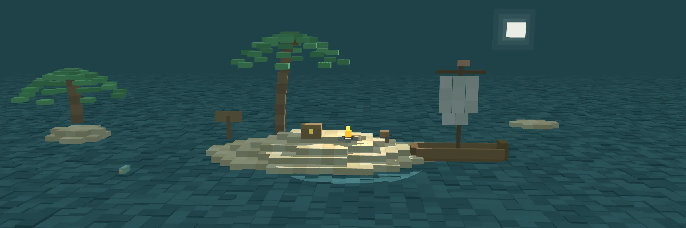

Les Naufragés, c'est un petit studio indépendant et sa communauté. On crée des jeux à jouer gratuitement dans le navigateur, et on fait vivre un serveur Minecraft et un Discord.

Tout est gratuit et se lance dans le navigateur, sans rien installer (sauf Minecraft et le logiciel de montage).
Le mot du jour en français, et une histoire à suivre. Notre jeu principal.
⛏️Semi-factions sur Java et Bedrock : claims, guerres, économie et métiers.
🎮Le quiz esport du jour : 10 rounds, du facile au difficile.
⚔️Stratégie historique : diplomatie, dynasties et batailles en 3D.
✠Démo 3D au temps des croisades, en préparation pour Steam.
🎬Un logiciel de montage vidéo gratuit pour Windows, Mac et Linux.
On a tous échoué sur la même île. Depuis, on construit, on commerce et on se fait la guerre.
Monde survie avec claims et guerres de factions.
Métiers et quêtes pour progresser.
Des cadeaux pour la communauté, pub autorisée.
Soutien aux créateurs Twitch & YouTube.
Bots, rôles et staff actif au quotidien.
Une communauté fun et bienveillante.
Vérification de l'état…
naufragesmc.mine.funVersion 1.21.11 conseillée. Les versions plus anciennes (1.20, 1.21…) et les 26.x sont aussi acceptées.naufragesmc.mine.funPort : 30603Sur Bedrock : Jouer → Serveurs → Ajouter un serveur, puis colle l'adresse et mets le port 30603. Chat vocal : installe le mod Simple Voice Chat (facultatif).
Chaque vote fait monter le serveur dans les classements. C'est gratuit, une fois par jour et par site, et tu gagnes 150 $ + 3 émeraudes en jeu. Entre ton pseudo Minecraft exact (Bedrock : avec le point devant, ex. .Pseudo).
Classé sur Voter pour Les Naufragés dans le top Serveurs Minecraft.
Les grades Matelot, Corsaire et Amiral (dès 4,99 €) aident à payer l'hébergement. Préfixe, couleurs, monture et particules : uniquement cosmétique, aucun avantage en jeu.
Tu construis. Tu combats. Tu domines.
Rejoins des joueurs motivés dès maintenant.
Sur notre serveur, le Naufragés Bot fait vivre le Mot Mystère au quotidien. Et il ne connaît jamais le mot : zéro spoiler.
Rappel du mot du jour Chaque jour, une notification pour ne jamais casser ta série.
Classement des joueurs Colle ton résultat, le bot compte les points. Le top 10 avec /classement.
Accueil des nouveaux Un message de bienvenue avec un bouton pour jouer tout de suite.
Modération Des outils simples pour garder une ambiance saine.
Des vrais chiffres, mis à jour en temps réel.
Le jeu, le serveur Minecraft, le Discord et le bot : toutes les nouveautés au même endroit.
Oui, le jeu est 100 % gratuit. Il est financé par de la publicité, et tu peux regarder une courte vidéo si tu veux une partie bonus.
Un nouveau mot arrive chaque jour à minuit. Tout le monde a le même mot le même jour.
Non, tu joues directement. Ta série et tes statistiques sont enregistrées sur ton appareil.
Oui, la version web marche sur téléphone. Les applications Android et iPhone arrivent bientôt.
À la fin de la partie, appuie sur « Partager mon score ». Ta grille est copiée en carrés de couleur, sans dévoiler le mot.
Le principe est le même : un mot du jour en 6 essais. Mais Mot Mystère est entièrement en français, gratuit et sans inscription, et chaque mot trouvé débloque une page du journal d'un naufragé. Tu as aussi la bouteille à la mer (un indice contre un essai), des niveaux de difficulté et des parties libres pour t'entraîner.
Oui. Les pages des jours que tu as manqués se repêchent gratuitement depuis le journal du jeu : tu peux lire l'histoire depuis la page 1.
Sur Java (PC), ajoute le serveur naufragesmc.mine.fun (version 1.21.11 conseillée, les plus anciennes et les 26.x marchent aussi). Sur Bedrock (mobile, console, Windows), mets la même adresse avec le port 30603. Un compte Minecraft officiel est nécessaire. Tout est expliqué ici.
Viens nous le dire sur notre Discord ou sur X (@NaufrageeC), on lit tout !
Un mot du jour en 2 minutes, ou une soirée sur le serveur Minecraft.
Trouve le mot du jour en 6 essais.
Un mot de 5 lettres par jour, le même pour tout le monde. Chaque mot trouvé débloque une page du journal d'un naufragé : une histoire à suivre, une page par jour.
Gratuit, sans compte, en français. Un indice si tu sèches, ta série et tes stats, une grille à partager sans spoiler. Installable sur ton téléphone, les applis Android et iPhone arrivent bientôt.
Au bout de la plage, quelque chose brille entre les vagues. Je m'approche doucement, le cœur battant…